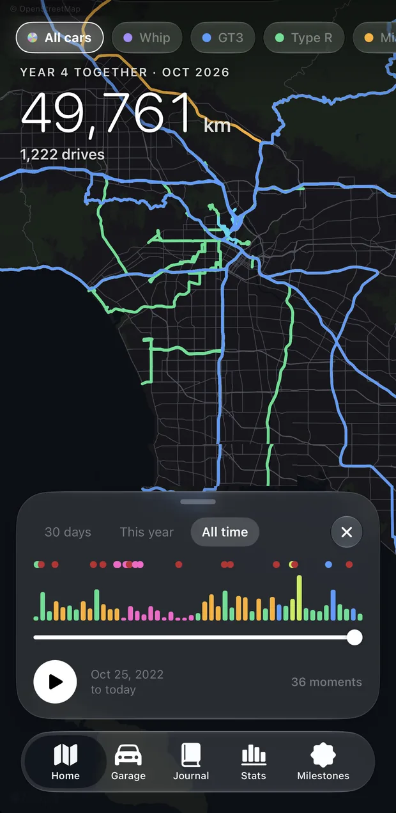
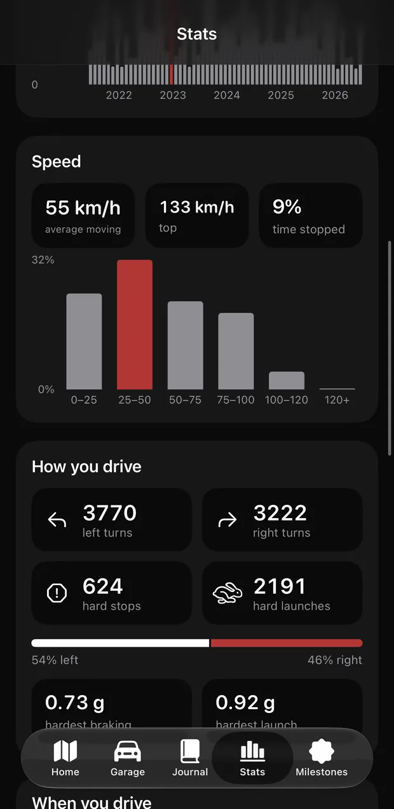
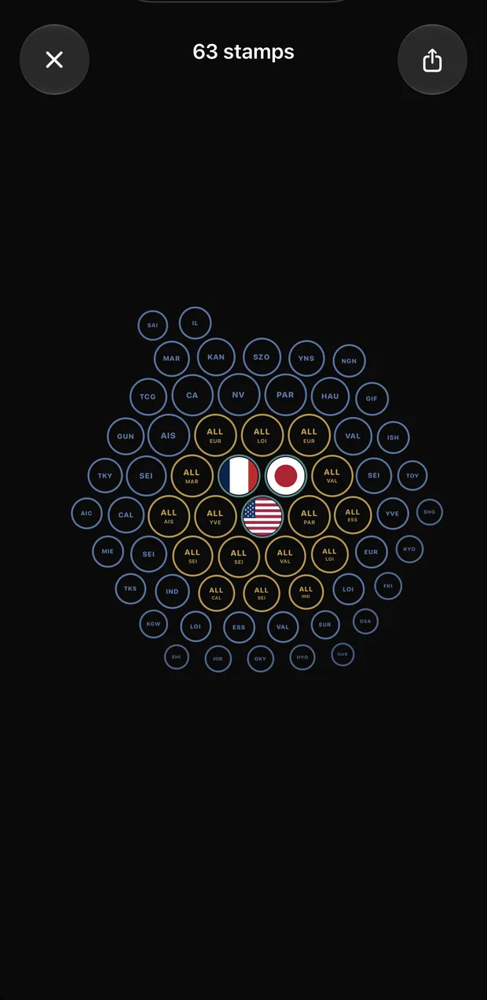
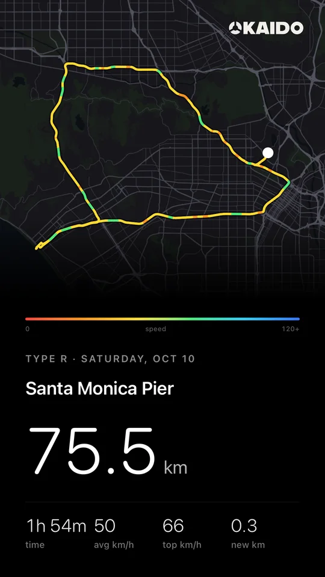
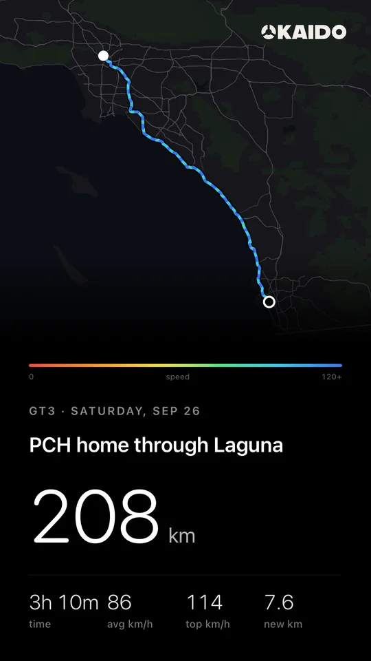
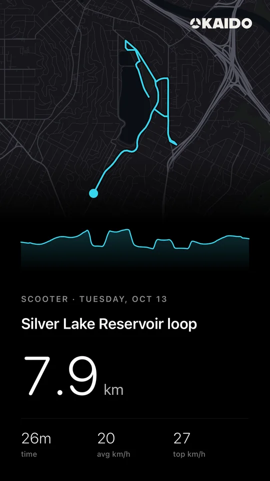
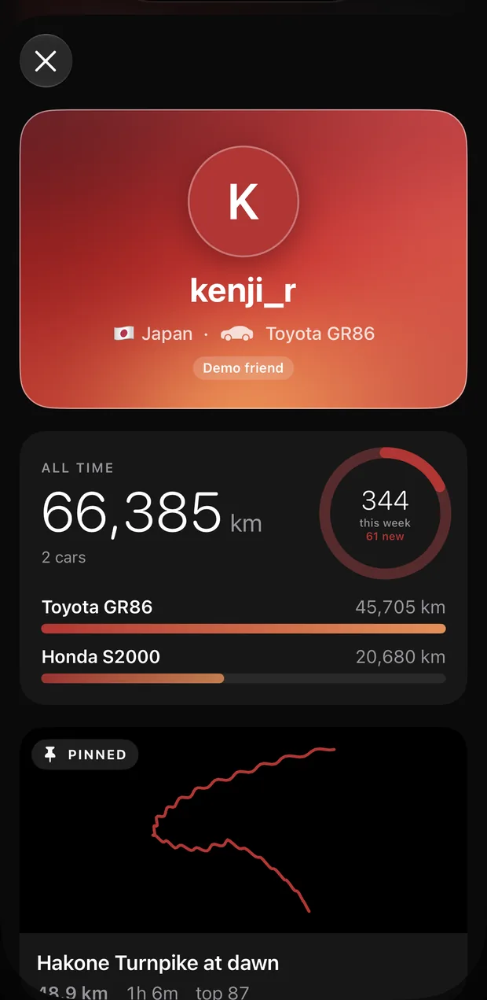

Every road you've driven.




Kaido is a logbook for your car. It records every drive on its own and fills in a map of every road, county and country you've driven, car by car.
Look up a drive.
Every drive lands in a logbook you can search by road, town or place. Try it here on a sample: four years and about 50,000 km around Los Angeles, a year in France and a road trip across Japan.
0km
Loading the sample drives
An atlas of real places.
Your drives fill in the places they pass through: countries first, then states, provinces and prefectures, then counties and cities. Every new one earns a stamp.
Filter by car to see where each one has been, or tap a flag to see the day you first crossed in.


Any drive becomes a poster.
Pick a drive or a record and Kaido sets it as a poster: the route, the distance and the time, with the speed graph and your car's photo if you want them.
Share it as an image, or as a 9:16 video that draws the line and lands on the map.




Friends, ranked on new roads.
Add friends with an invite code. Weekly boards compare new roads, new counties, the longest trip and miles. Never speed.
Stats keeps the rest for you alone: when you drive, how you brake, your early-bird and night-owl records.
You choose what's shared.
Four switches from the app, as they work in Kaido. Try them.
Share rides with friends.
Friends see your latest and pinned drives: route, distance, time, speed.
Put the speed graph on posters.
Average and top speed print under the route.
End the video on the map.
The video ends on the line alone.
Sync with iCloud.
Cars and drives follow you to a new iPhone, in your own private iCloud.
First, add your car.
Scan the VIN or type it, and Kaido looks up the make and model. The camera can read your odometer too.
Then just drive.
Kaido notices when you're in the car and logs the trip. No buttons, nothing to start.
It draws the road.
Each drive lands in your Journal and on that car's map, matched to the streets you took.
Your map fills in.
New roads, counties and countries light up, and the odometer keeps count.
- Made by
- Taiki Ishikawa
- For
- iPhone, iOS 26
- Write to
What the name means
Kaidō means the old highway. On roads like the Tōkaidō, travelers went stage by stage and remembered every town. Kaido keeps that record for your car.
It's made by one person who wanted a logbook for his own driving and couldn't find one that wasn't a game. Read the story.
Questions
Do I need an account?
No. Kaido keeps your drives in sync through your own iCloud. There's no sign-up, no password and no email to hand over.
How does it know I'm driving?
Motion sensors notice when you start driving, then GPS records the trip until you park. Set location access to Always so it can work in the background.
Who can see my drives?
Only you, unless you join Friends. Friends see your profile, cars and totals, and your latest and pinned ride unless you turn ride sharing off. What's shared.
What does it cost?
Kaido is free to try in the beta. Recording, your map and the Atlas will stay free; an optional Pro upgrade for extras is planned.
Does it work outside the US?
Yes. The Atlas covers every country, states and provinces worldwide, US counties, and Japan's prefectures and cities. More answers in Support.
Start your logbook.
Kaido is in beta on TestFlight for iPhone. Ask for an invite and the link comes by email.
Join the beta